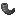
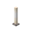
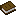

Bubba's Bees
40 bees that make the blocks of the world: stone and dirt, every biome's plants and logs, Nether and End blocks, and every ore. Each bee brings home its own honeycomb, and the combs craft into blocks.
Getting started
- Craft an Advanced Beehive from a vanilla beehive, honeycomb, honey blocks and planks (Hives & tools). It holds 5 bees and 8 combs.
- Find vanilla bees and lead them home with flowers, or catch them with a bee jar.
- Craft a Lesser Bubba Star (below). It's a reusable catalyst: gem recipes hand it back.
- Craft a conversion gem for the bee you want (each bee's page shows its gem), then use it on a vanilla bee. The bee turns into that kind and keeps its hive. Vanilla bees follow you when you hold a gem.
- Give it flowers. Each bee works its own "flowers": the blocks it makes (stone bees visit stone, iron bees visit iron ore). Put them within a few blocks of the hive.
- Harvest when the hive is full (8 combs): shears give the combs, a glass bottle gives honey. Use a smoker first so the bees stay calm, or put a comb chute under the hive to harvest it for you.
- Craft the combs into blocks: Comb recipes.
The three stars
Every conversion gem is crafted around a star, and the star comes back. Better bees need better stars.
| Star | Bees | |
|---|---|---|
| Lesser Lesser Bubba Star | 10 |  Stone Bee Stone Bee  Dirt Bee Dirt Bee  Nature Bee Nature Bee  Forest Bee Forest Bee  Desert Bee Desert Bee  River Bee Meadow Bee River Bee Meadow Bee  Jungle Bee Jungle Bee  Taiga Bee Taiga Bee  Savanna Bee Savanna Bee |
| Bubba Bubba Star | 19 |  Amethyst Bee Amethyst Bee  Obsidian Bee Obsidian Bee  Glow Bee Glow Bee  Mesa Bee Mesa Bee  Swamp Bee Swamp Bee  Frost Bee Frost Bee  Lush Caves Bee Lush Caves Bee  Deep Dark Bee Deep Dark Bee  Mushroom Fields Bee Mushroom Fields Bee  Sea Bee Sea Bee  Coral Bee Coral Bee  Prismarine Bee Prismarine Bee  Corrupt Stone Bee Corrupt Stone Bee  Soul Bee Soul Bee  Corrupt Nature Bee Corrupt Nature Bee  Magma Bee Magma Bee  Ender Bee Ender Bee  Royal Guard Bee Royal Guard Bee  Starlight Bee Starlight Bee |
| Celestial Celestial Bubba Star | 10 |  Coal Bee Coal Bee  Copper Bee Copper Bee  Iron Bee Iron Bee  Gold Bee Gold Bee  Redstone Bee Redstone Bee  Lapis Bee Lapis Bee  Diamond Bee Diamond Bee  Emerald Bee Emerald Bee  Quartz Bee Quartz Bee  Ancient Debris Bee Ancient Debris Bee |
| Ritual Royal Summoning ritual | 1 |  Royal Queen Royal Queen |
 Lesser Bubba Star
Lesser Bubba Star

 1 × Lesser Bubba Star
1 × Lesser Bubba Star Bubba Star
Bubba Star




 1 × Bubba Star
1 × Bubba StarThe Lesser Bubba Star is used up here.
 Celestial Bubba Star
Celestial Bubba Star
Not crafted: a Bubba Star becomes celestial in the Celestial Ritual, one night under open sky. Every ore bee's gem needs it.
Rules every bee follows
- Calm and busy hives. Use a Bubba Star on a hive to switch it. Calm (the default) is a gentle hive with vanilla-like bees; busy bees fly faster and spend half as long inside. All the numbers in this guide are for busy hives.
- Comb rolls. Most bees bring home their comb on every trip. Only the diamond bee (1 in 4) and the ancient debris bee (1 in 6) roll for it; a failed roll brings home nothing. Some bees also have a rare comb that rolls first. See Ores & rates.
- Home dimension. Nether bees work at half speed outside the Nether, the ender bee outside the End, and every other bee outside the Overworld (their hives keep them twice as long).
- Home biome. Most biome bees spend 20% less time in a hive placed in their home biome. The royal queen gives the same boost; they don't stack.
- Day, night and weather. Overworld bees work in daytime and dry weather, like vanilla bees (water-safe and snowproof bees keep going in rain or snow). Starlight bees work only at night. In the Nether and the End there is no night, so bees there work all the time.
- Full hives hold 8 combs. A bee that comes home to a full hive loses its comb (rare combs too), so harvest often or use a comb chute.
Rare combs
Some bees now and then bring home a second, rarer comb. It rolls first on every trip; if it misses, the bee's own comb rolls.
| Rare comb | Bee | Odds per trip | Per hive-hour | Makes |
|---|---|---|---|---|
 Bone Honeycomb Bone Honeycomb | Desert Bee | 1 in 20 | 10.5 | Bone Block |
 Budding Amethyst Honeycomb Budding Amethyst Honeycomb | Amethyst Bee | 1 in 150 | 1.40 | Budding Amethyst |
 Echo Honeycomb Echo Honeycomb | Deep Dark Bee | 1 in 60 | 3.51 | Echo Shard, Sculk Catalyst, Sculk Shrieker |
 Nautilus Honeycomb Nautilus Honeycomb | Sea Bee | 1 in 20 | 10.5 | Nautilus Shell |
 Sad Honeycomb Sad Honeycomb | Soul Bee | 1 in 20 | 10.5 | Wither Rose, Crying Obsidian, Ghast Tear |
 The Encyclobeedia
The Encyclobeedia
The mod's guide book, in game: everything on this site (every bee, recipe and drop rate) in a book you can read without leaving your world. Craft a book with a honeycomb. Its ritual pages show the layouts in 3D, and the eye button shows them as a see-through ghost in the world while you build (Visualize).

+
(shapeless)
1 × Encyclobeedia